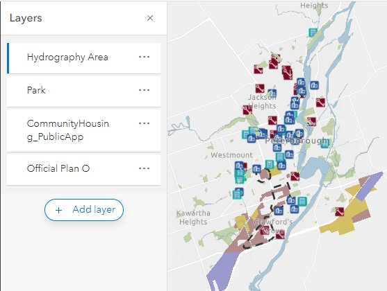
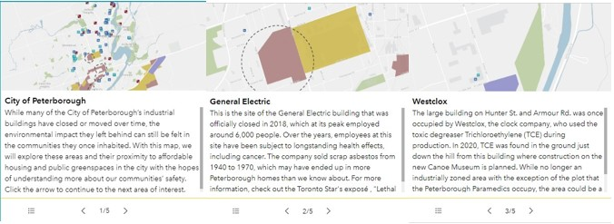
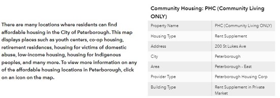
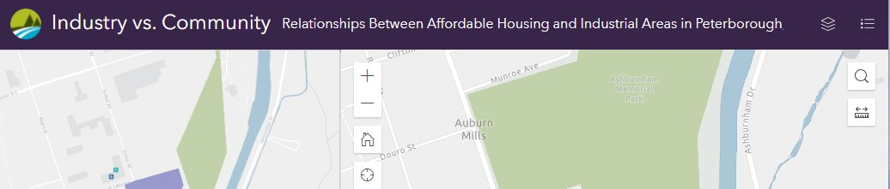
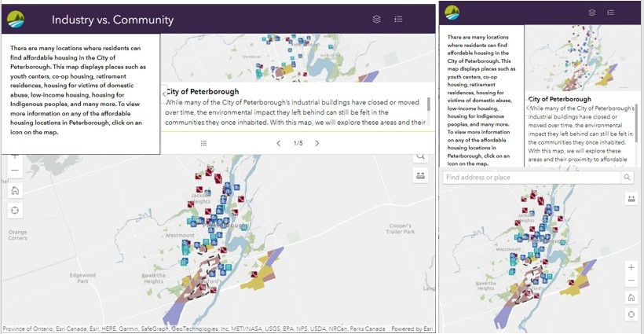
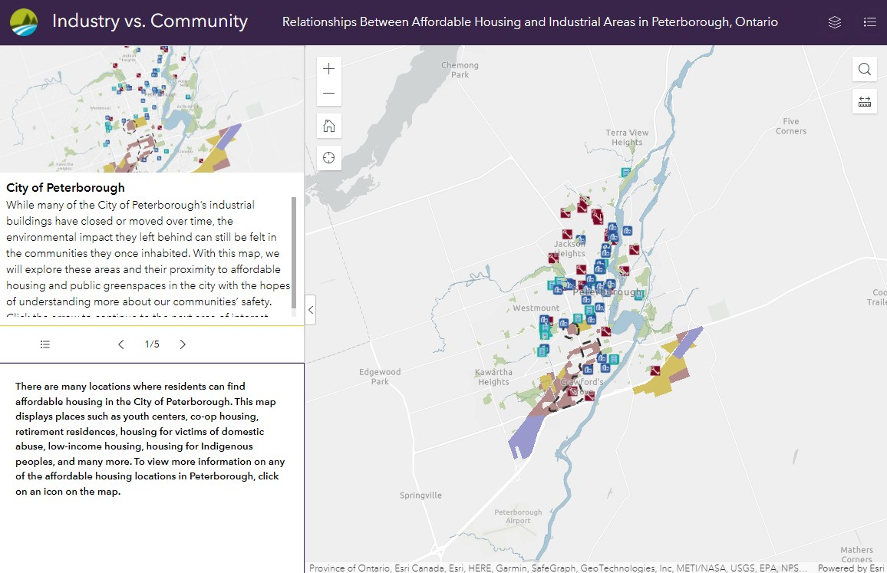

Mapping Injustice in Peterborough
Our Web Solution Process Guide and General Descent Into Week 15 Chaos
Introduction
A little summary perhaps?
Our Ideal
Peterborough residents and organizations can visit a website that displays three different ways to map areas with a high risk of environmental harm. Each embedded map shows the main areas of harm such as the old GE building, and old industrial buildings with lasting effects on the land.
Our Reality
There is no easy to digest web map that shows residents of Peterborough the reality of their proximity to neighbourhood pollutants.
Our Consequences
Residents and policy makers do not know the extent of local pollution and potential health consequences.
Our Proposal
We will explore and develop a web product using either AGOL Experience Builder, StoryMaps, or Dashboard and will display it in a map embedded on a webpage. The map will display areas with high levels of pollution.
The Journey
ArcGIS Online Dashboards
Using feature layers found on ArcGIS Online a web map was created to show community housing, greenspace and industrial areas in Peterborough. Layer and field names were then changed to be more appropriate
 ArcGIS Online Experience Builder
ArcGIS Online Experience Builder
A web map was first created to form the main section of the Experience Builder design. This map included layers showing some industrial areas in the city, as well as a community housing layer and greenspace.
The layout was decided after playing with the available widgets offered by Experience Builder. Initially, the List widget was being used to talk about relevant locations in the area, but ultimately the Bookmarks widget was more useful, as it could act like a tour around the relevant locations.
The Feature Info widget was used to show attributes of the community housing layer when clicked, and the map pop-up on click was removed. The first Image below is when what the empty box looks like (left) versus when an item is selected on the map (right).
Options to toggle on the legend and map layers were added using widgets in the header, as well as a search function, measurement tool, and a find location tool.
The last step of the layout was to determine how it changes when resized. Experience Builder offers many options for screen size, which can be redesigned for each major size group (like small, medium, large). For different size ratios within these broad categories, any layout adjustment made would apply to all of them, so some of the smallest size option have odd looking layouts still. To compensate for text overlapping among different sizes (image below), the subheading was hidden for medium screens (left), and both the title and the subheading were hidden from small screens (right).
The best version of the layout is the large screen layout (below).
While Experience Builder provides useful options, ultimately with the story we want to tell with the data, something that offers more of a text-based tour through the data would be more useful. The Bookmarks widget provides some capability for this, but the StoryMap service is undoubtedly a better strategy for this type of project.
ArcGIS Online StoryMaps
Storymap screenshot to go here and link in external.
Next